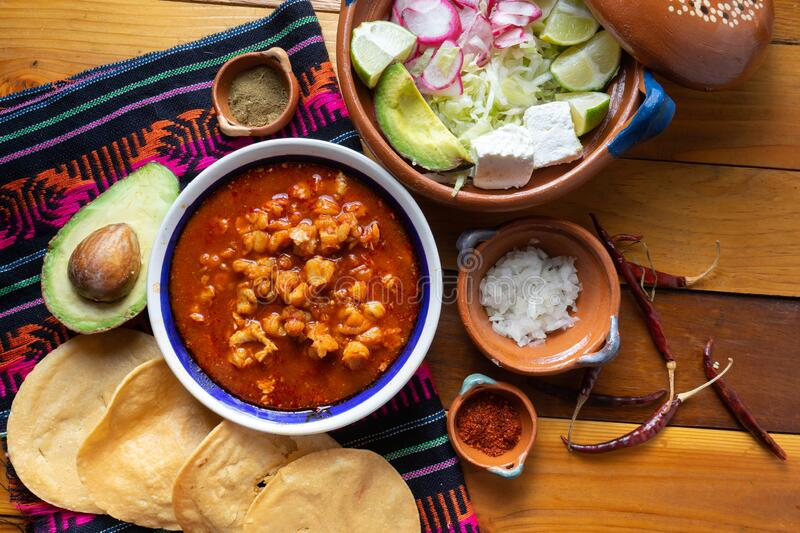

Red Pozole

Description
If you have tried Pozole before, you know it is a tasty, filling, and above all, a nutritious soup.
We usually eat this soup for dinner, and it’s a classic dish in Mexican Holidays during the cold nights of winter.
This recipe is for a red pozole, even though in Mexico we also have white (without the red sauce) and green pozole adding Salsa Verde.
And yes, you can use chicken instead of pork for the soup if you prefer
Cooking Time: 1hr 5mins
Servings: 8
Ingredients
For the soup:
- 4 quarts of water
- 2 pounds cubed pork shoulder
- 1 pound pork spare ribs or baby back ribs
- 1 white onion cut in quarts
- 8 large garlic cloves
- Salt to taste
- 3 cans (15 ounces each) white hominy, drained and rinsed
For the red sauce:
- 5 guajillo peppers cleaned, seeded, open flat and deveined
- 5 ancho peppers also cleaned, seeded, open flat and deveined
- 6 garlic cloves
- 1 medium white onion coarsely chopped
- 1/2 teaspoon dry mexican oregano
- 2 tablespoons vegetable or canola oil
- Salt to taste
For the garnish:
- 1 head of lettuce finely shredded
- 1 1/2 cup radishes sliced
- Mexican oregano
- Deep fried corn tortillas tostadas
- Limes cut in wedges
- Optional: avocado chopped
Steps
To prepare the soup:
- Heat water in a large stockpot. Add pork meat, spare ribs, onion and garlic.
- Bring to a boil, then lower the heat and let simmer, partially covered for 2 and a half hours or until the meat falls off the bone
- Season with salt when meat is almost done
- While cooking, skim the top layer of foam and fat from the pot using a ladle.
- If necessary, add warm water to maintain the same level of broth in the pot
- Remove pork from broth; reserve broth.
- Trim excess fat, and remove meat from bones; discard bones, onion and garlic from the broth
- Shred meat, and cover
To prepare the sauce:
- Soak the ancho and guajillo peppers in water just enough to cover for 25-30 minutes until soft
- Using a blender or food processor blend peppers, garlic cloves, onion, and oregano, adding some of the water in which they were soaking
- Puree mixture until smooth
- Heat oil in a large skillet over medium-high. Add the dry pepper puree and salt to taste, stirring constantly.
- Reduce heat to medium; simmer, about 25 minutes
- Using a strainer, add the sauce to the broth
- Bring to a boil and add the meat, and simmer gently, for about 10 minutes.
- Stir in white hominy and season with salt and pepper. Simmer until heated through
- Serve the pozole in a large soup bowl and place garnishes on the side
Notes:
-
If you want to use uncook cacahuazintle corn (hominy) and cook it yourself, rinse the corn, remove any grain that looks dry or old.
Place the corn in a pot with enough water to cover it at least 8-10 centimeters above the corn kernels.
Add a quarter of a white onion, two cloves of garlic, you can also herbs like bay leaves and thyme.
Cook for about an hour and a half until the corn opens. It may take less or longer, it depends on how old the corn is.
This is for 1-½ lb. of corn. When the corn is already cooked, drain it and add it to the pozole as indicated in the recipe.
Homepage